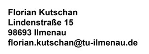

Impressum
Verantwortlichkeiten
Verantwortlich für den Inhalt dieser Webseite gemäß §55 RStV und §5 TMG sowie die Einhaltung von Urheber- und Verwertungsrechten Dritter ist:
Diese Webseite wird zur Begleitung von Studium und Lehre bzw. von Forschungsvorhaben geführt.
(Sie stellt eine studienbegleitende Studien- bzw. Prüfungsleistung im Strukturierung Multimedialer Inhalte dar.)
Vertretungsberechtigter für das Fach Strukturierung Multimedialer Inhalte:
Dipl.-Inf. Gunther Kreuzberger
Fachgebiet Virtuelle Welten/Digitale Spiele
Ehrenbergstraße 29
D-98693 Ilmenau
+49 3677 69-4660
gunther.kreuzberger@tu-ilmenau.de
Das Fach Strukturierung Multimedialer Inhalte ist verpflichtender Bestandteil des Studiengangs
Angewandte Kommunikationswissenschaft. Dieser wird angeboten von
Technische Universität Ilmenau
Ehrenbergstraße 29
D-98693 Ilmenau
+49 3677 69-5001 (Rektor)
rektor@tu-ilmenau.de (Rektor)
Die Technische Universität Ilmenau ist eine Körperschaft des Öffentlichen Rechts.
Sie wird durch den Rektor (Univ.-Prof. Dr. Peter Scharff, www.tu-ilmenau.de) gesetzlich vertreten.
Zuständige Aufsichtsbehörde: Thüringer Kultusministerium, Postanschrift, Online-Erreichbarkeit.
Umsatzsteuer-Identifikationsnummer gemäß §27a Umsatzsteuergesetz: DE 195 822 483.
Haftungsausschluss
Haftung für Inhalte
Die Inhalte dieser Seite wurden mit größter Sorgfalt erstellt. Für die Richtigkeit, Vollständigkeit und Aktualität der Inhalte kann ich keine Gewähr übernehmen. Als Dienstanbieter bin ich gemäß § 7 Abs.1 TMG für eigene Inhalte auf diesen Seiten nach den allgemeinen Gesetzen verantwortlich. Nach §§ 8 bis 10 TMG bin ich als Dienstanbieter jedoch nicht verpflichtet, übermittelte oder gespeicherte, fremde Informationen zu überwachen oder nach Umständen zu forschen, die auf eine rechtswidrige Tätigkeit hinweisen. Verpflichtungen zur Entfernung oder Sperrung der Nutzung von Informationen nach den allgemeinen Gesetzen bleiben hiervon unberührt. Eine diesbezügliche Haftung ist jedoch erst ab dem Zeitpunkt der Kenntnis einer konkreten Rechtsverletzung möglich. Bei Bekanntwerden von entsprechenden Rechtsverletzungen werden diese Inhalte umgehend entfernt.
Haftung für Links
Diese Websteite enthält Links zu externen Webseiten Dritter, auf deren Inhalte ich keinen Einfluss habe. Deshalb kann ich für diese fremden Inhalte auch keine Gewähr übernehmen. Für die Inhalte der verlinkten Seiten ist stets der jeweilige Anbieter oder Betreiber der Seiten verantwortlich. Die verlinkten Seiten wurden zum Zeitpunkt der Verlinkung auf mögliche Rechtsverstöße überprüft. Rechtswidrige Inhalte waren zum Zeitpunkt der Verlinkung nicht erkennbar. Eine permanente inhaltliche Kontrolle der verlinkten Seiten ist jedoch ohne konkrete Anhaltspunkte einer Rechtsverletzung nicht zumutbar. Bei Bekanntwerden von Rechtsverletzungen werden derartige Links umgehend entfernt.
Urheberrecht
Die durch den Webseitenbetreiber erstellten Inhalte und Werke auf diesen Seiten unterliegen dem deutschen Urheberrecht. Die Vervielfältigung, Bearbeitung, Verbreitung und jede Art der Verwertung außerhalb der Grenzen des Urheberrechtes bedürfen der schriftlichen Zustimmung des jeweiligen Autors bzw. Erstellers. Downloads und Kopien dieser Seite sind nur für den privaten, nicht kommerziellen Gebrauch gestattet. Soweit die Inhalte auf dieser Seite nicht vom Betreiber erstellt wurden, werden die Urheberrechte Dritter beachtet. Insbesondere werden Inhalte Dritter als solche gekennzeichnet. Sollten Sie trotzdem auf eine Urheberrechtsverletzung aufmerksam werden, bitte ich um einen entsprechenden Hinweis. Bei Bekanntwerden von Rechtsverletzungen werden derartige Inhalte umgehend entfernt.